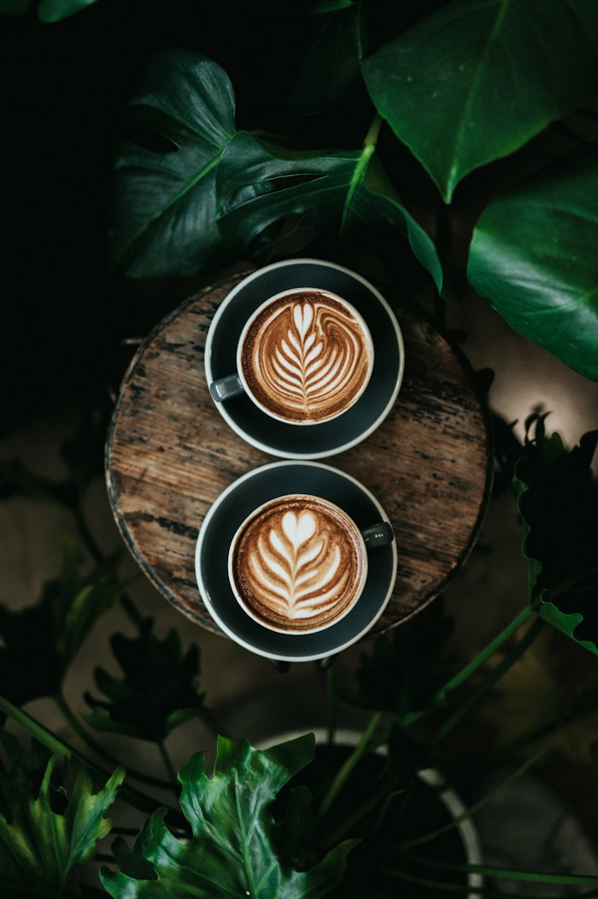

Inteligencia Artificial (RAG)
Desarrollamos modelos de lenguaje (LLMs) entrenados con bases de datos etnográficas autorizadas, permitiendo consultar saberes ancestrales mediante asistentes virtuales éticos y contextualizados.
Alma y Semilla
Etnotecnología y Saberes Ancestrales 5.0
Colombia 5.0 Nuestro Tejido Digital en la Muestra Comercial Café & Conexiones TIC · Bogotá D.C.
Conoce el repositorio vivo
Cada semilla guarda un código de vida; la tecnología nos ayuda a protegerlo.
— Dirección Fundación Alma y Semilla
La Fundación Alma y Semilla es una Entidad Sin Ánimo de Lucro (ESAL) de carácter privado, constituida en Chía, Cundinamarca. Nacimos de la necesidad de salvaguardar el conocimiento etnocientífico, ecológico y médico ancestral frente a la erosión del tiempo.
No solo investigamos el pasado; utilizamos la Inteligencia Artificial, la Realidad Virtual y el IoT para crear un puente tecnológico que garantice que estas sabidurías perduren, se respeten y se compartan con fines de bienestar global.
Tres tecnologías de cuarta generación al servicio de una misma propósito: que el conocimiento de las comunidades étnicas siga vivo, sea trazable y respete a sus autoridades.
Desarrollamos modelos de lenguaje (LLMs) entrenados con bases de datos etnográficas autorizadas, permitiendo consultar saberes ancestrales mediante asistentes virtuales éticos y contextualizados.
Inmersión digital en territorios sagrados, procesos artesanales y rituales, permitiendo la experiencia empática sin la huella de carbono del desplazamiento físico.
Implementación de sensores de bajo costo para el monitoreo ambiental y climático en ecosistemas estratégicos y cultivos ancestrales, cruzando datos técnicos con saberes agrícolas tradicionales.
Cuatro frentes de trabajo derivados del Art. 4 de los Estatutos, expresados en lenguaje de proyecto tecnológico.
Sistematización de prácticas agrícolas, cíclicas y de conservación de suelos y agua. Promoción de la soberanía alimentaria desde la cosmovisión étnica.
Investigación y documentación de etnobotánica y farmacopea tradicional. Creación de repositorios de saberes terapéuticos respetando los protocolos de biopiratería y propiedad intelectual colectiva.
Preservación de lenguas, narrativas orales, patrones geométricos y expresiones artísticas que contienen el código genético cultural de los pueblos.
Establecimiento de puentes con entidades académicas, gubernamentales (MinTIC, MinCultura) y comunidades locales para el fomento de la experimentación y la capacitación tecnológica con enfoque diferencial.
En la huerta aprendí que las cosas buenas toman tiempo. Hoy mi mamá vende lo que sembramos y yo quiero estudiar agronomía.
— Participante del programa Semillero, 14 años
Como entidad sin ánimo de lucro (ESAL), cada aporte de empresas aliadas o ciudadanos se transforma directamente en infraestructura tecnológica y bienestar campesino.
Entregamos certificado de donación y reporte de impacto trimestral a cada aliado.
A través de nuestra arquitectura de Recuperación de Información Aumentada (RAG), alimentamos modelos de IA con textos, audios y registros validados por las comunidades guardianas.
Los embeddings de los saberes se almacenan respetando los niveles de acceso (público, restringido, sagrado).
Cada respuesta generada por la IA cita su fuente comunitaria y geográfica, garantizando el reconocimiento de la propiedad intelectual colectiva (Convenio 169 OIT).
Acceso por voz, texto y exploración gráfica de nodos de conocimiento.
Buscamos comunidades guardianas, investigadores, entidades gubernamentales y aliados tecnológicos que quieran documentar, proteger y difundir saberes con propósito.